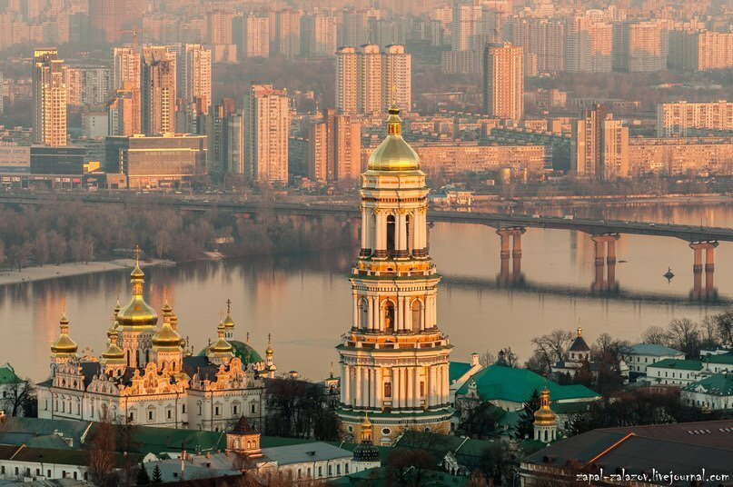
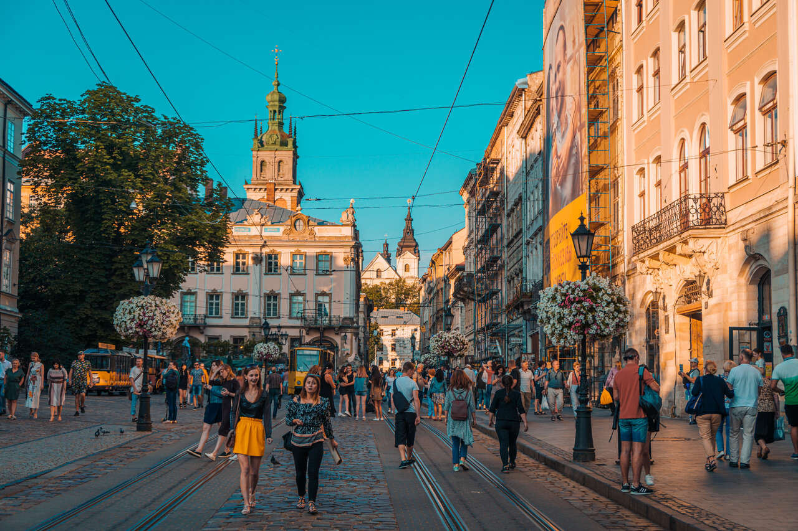
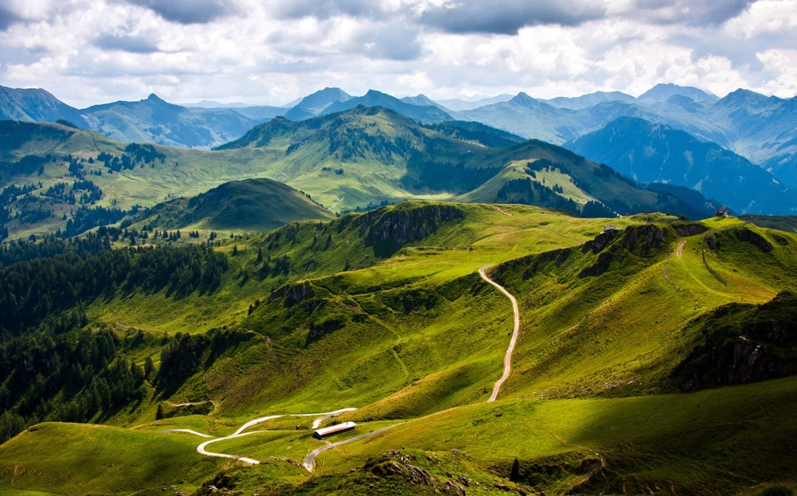

Подорожі по Україні
Київ – Серце України
Київ є столицею України та одним із стародавніх міст Східної Європи. Його багате історичне та культурне надбання приваблює тисячі туристів щороку. Відвідувачі можуть насолодитися красою Софійського собору, прогулятися по Андріївському узвозу та відвідати численні музеї та галереї.
Львів – Місто Кави та Традицій
Львів відомий своїм унікальним поєднанням східної та західної культур. Місто славиться своїми кав'ярнями, вуличною архітектурою та численними фестивалями. Прогулянки по старому місту дозволяють відчути справжню атмосферу цього чарівного місця.
- Ратуша та площа Ринок
- Високий Замок
- Пламенна церковь
Одеса – Перлина Чорноморського Узбережжя

Одеса, розташована на Чорноморському узбережжі, є одним із найвідоміших курортів України. Місто приваблює туристів своїми пляжами, архітектурою та живою ночами. Одеса також славиться своєю господарською спадщиною та унікальними культурними традиціями.
Карпати – Природний Рай
Карпати є одним із найкрасивіших регіонів України, відомим своєю неповторною природою та мальовничими гірськими пейзажами. Це ідеальне місце для любителів туризму, альпінізму та відпочинку на свіжому повітрі. Відвідування Карпат дарує можливість насолодитися чистим повітрям, чудовими краєвидами та багатою флорою та фауною.